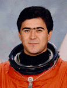

Lyndon B. Johnson Space Center
Houston, Texas 77058
|
National Aeronautics and Space Administration Lyndon B. Johnson Space Center Houston, Texas 77058 |
 |
Biographical Data |
||
Salizhan Shakirovich Sharipov
GCTC Cosmonaut
PERSONAL DATA: Born August 24, 1964 in Uzgen, Oshsk region, Kirghizia. Married to Nadezhda Mavlyanovna Sharipova. They have one daughter and one son. He enjoys football, likes to read books. His father, Mr. Shakirzhan Sharipov, resides in Uzgen, Oshsk region, Kirghizia.
EDUCATION: Graduated from the Air Force Pilot School in 1987. In 1994, he graduated from Moscow State University with a degree in cartography.
EXPERIENCE: After graduation from the Air Force Pilot School in 1987, he worked as a pilot-instructor and taught 8 cadets. He has logged over 950 hours flying time. He has experience flying on MIG-21, L-39 aircraft.
Selected by the Gagarin Cosmonaut Training Center (GCTC) Sharipov became a cosmonaut-candidate in 1990. In 1992, he completed general space training and became a cosmonaut. As a member of the group he has completed a full course of training for OC MIR space flights as a crew commander.
Sharipov has flown two missions and has logged over 422 hours in space, including 9 hours and 58 minutes of EVA. He served as a mission specialist on the crew of STS-89 (January 22-31, 1998), the eighth Shuttle-Mir docking mission during which the crew transferred more than 8,000 pounds of scientific equipment, logistical hardware and water from Space Shuttle Endeavour to Mir. In the fifth and last exchange of a U.S. astronaut, STS-89 delivered Andy Thomas to Mir and returned with David Wolf. Mission duration was 8 days, 19 hours and 47 seconds, traveling 3.6 million miles in 138 orbits of the Earth.
Sharipov was the Flight Engineer on the Expedition-10 mission to the International Space Station (ISS). Expedition-10 launched from the Baikonur Cosmodrome in Kazakhstan on October 13, 2004 aboard Soyuz and docked with the ISS on October 15, 2004. Following eight-days of joint operations and handover briefings, the Expedition-9 crew returned to earth aboard Soyuz. In his six month stay aboard the station, Sharipov performed numerous tasks and science experiments and two repair and installation space walks. Expedition-10 ended on April 24, 2005 with a safe landing in the steppes of Kazakhstan.
From October 2005 to May 2006, Sharipov served as Director of Operations, Russian Space Agency, stationed at the Johnson Space Center, Houston.
MAY 2006
{kind=link}